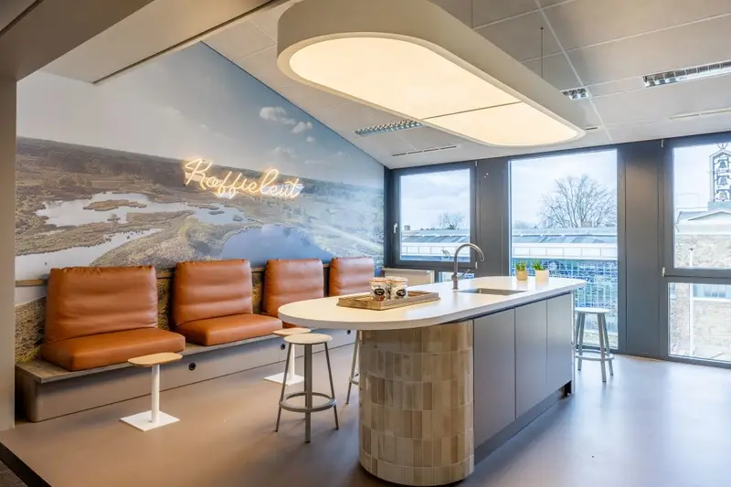
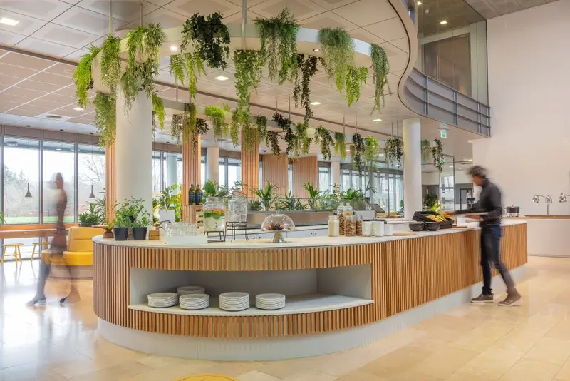
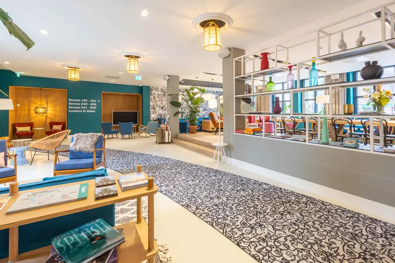
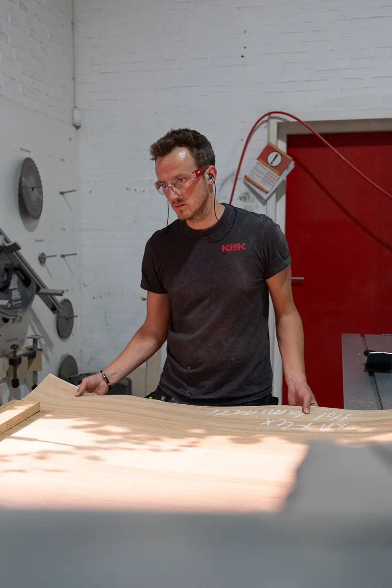
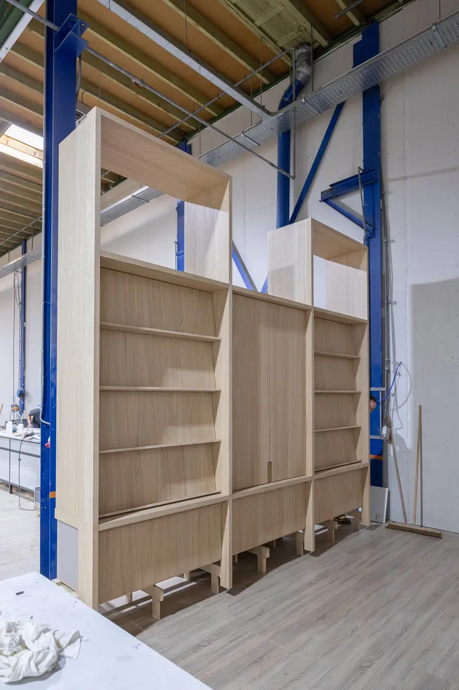

KEK-01Eén aanspreekpunt
Je vaste projectleider houdt je op de hoogte, de voorman is zijn ogen en oren op de bouw.
Interieurbouw en afbouw uit Den Bosch, sinds 2000





Samen, met trots gemaakt voor

KEK-01Je vaste projectleider houdt je op de hoogte, de voorman is zijn ogen en oren op de bouw.
 KEK-02
KEK-02
Drie CNC-machines en een automatisch platenmagazijn. Wij houden grip op kwaliteit en planning.
 KEK-03
KEK-03
Afbouw en interieur bij één partij: snellere doorlooptijd en minder kans op fouten.
Geen standaardtraject, maar een proces dat werkt. Strakke planning, korte lijnen en alles vastgelegd.
Start met een kennismakingWe leren elkaar kennen en bespreken de wensen en ideeën. We nemen de tijd, zodat we precies weten wat je zoekt.
Een duidelijke offerte: wat het kost, wat we leveren en hoe lang het ongeveer duurt. Alles netjes op een rij.
Is het akkoord, dan bevestig je de opdracht. Vanaf dat moment begint het echte werk.
In onze eigen werkplaats maken we alles precies volgens plan. Je hoort van ons hoe het ervoor staat.
Onze monteurs installeren alles netjes en efficiënt. Wat in de werkplaats is voorgebouwd, staat snel.
We lopen alles samen door. Zijn er nog puntjes, dan pakken we die op.


Sinds 2018 zitten we in ons eigen pand in Den Bosch, met een showroom en ruimte voor de hele productie. Wat we in de werkplaats voorbouwen, staat op locatie snel.
Vakwerk, korte lijnen en een team dat meedenkt. Dat lees je terug in wat opdrachtgevers over ons schrijven.
Een geweldig bedrijf dat uitsluitend vakwerk levert!
KEK heeft onze showroom een complete facelift gegeven en we zijn ontzettend tevreden over het eindresultaat. Vanaf het eerste contact tot aan de oplevering verliep alles uitstekend. Het team werkt professioneel, denkt mee en heeft duidelijk oog voor kwaliteit en afwerking. Alleen maar lof voor deze vakmensen. Absoluut een aanrader!
Een fantastisch bedrijf met een hecht en betrokken team!
De medewerkers werken uitstekend samen en leveren keer op keer producten van hoge kwaliteit. Je merkt dat er veel vakmanschap, enthousiasme en aandacht voor het eindresultaat aanwezig is. De prettige samenwerking en professionele werkwijze maken KEK een bijzonder fijne partij om mee samen te werken. Absoluut een aanrader!
KEK levert prachtig werk en beschikt over uitstekende medewerkers.
Je merkt dat er met vakmanschap en aandacht voor kwaliteit wordt gewerkt. Het team is prettig in de omgang en het eindresultaat ziet er uitstekend uit. Een professioneel bedrijf dat ik zeker kan aanbevelen!
Altijd een vlotte en vriendelijke afhandeling bij KEK!
De communicatie verloopt prettig en je wordt snel en professioneel geholpen. Je merkt dat klantvriendelijkheid belangrijk is en dat er aandacht wordt besteed aan een goede dienstverlening. Een betrouwbare partij waar ik erg tevreden over ben!
Ik werd ontzettend goed en snel geholpen door een vriendelijke medewerker.
De service was professioneel en het contact verliep bijzonder prettig. Er werd snel geschakeld en ik voelde me als klant uitstekend geholpen. Een fijne ervaring met een bedrijf waar klantvriendelijkheid duidelijk vooropstaat!
Een topbedrijf!
KEK maakt een uitstekende indruk door de professionele uitstraling en de kwaliteit van het werk. De betrokkenheid en het vakmanschap maken het een fijne partij om mee samen te werken. Zeker een aanrader!
Friendly and welcoming staff!
A pleasant experience with KEK, where the approachable and courteous attitude of the team makes a positive impression. Great to deal with a company that values friendliness and good customer service!
Een los meubel of een compleet pand: we komen langs, meten op en sturen je een offerte op maat.